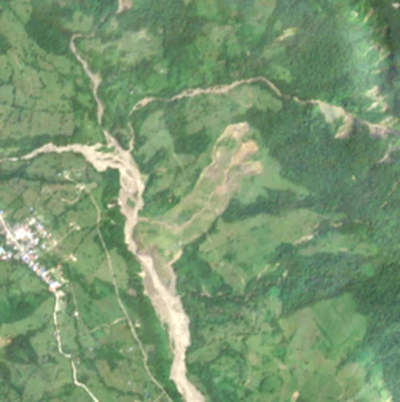
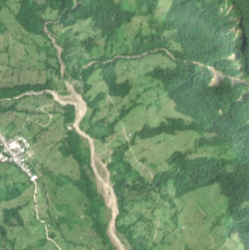
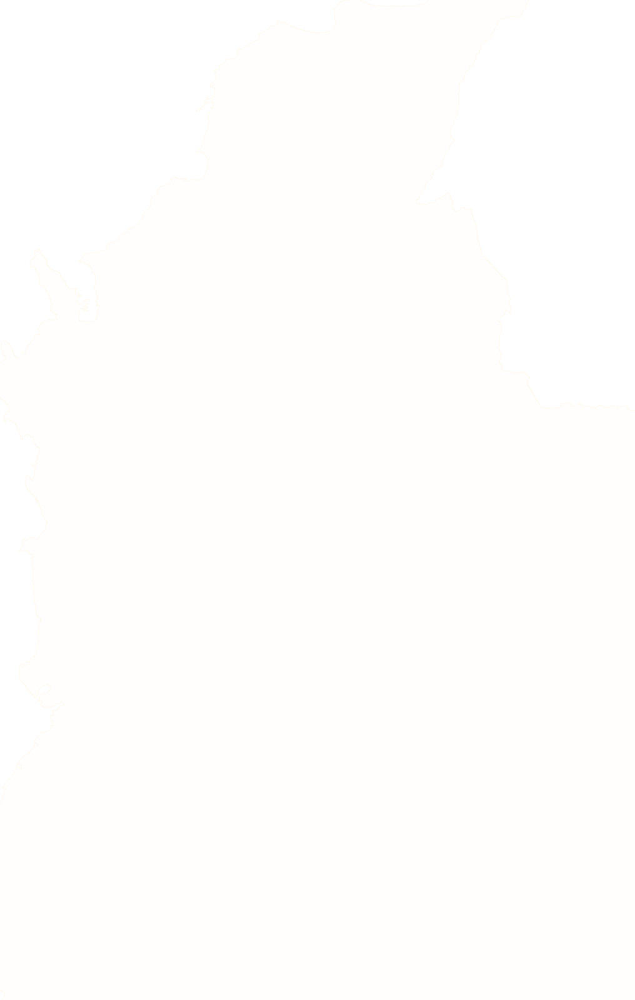
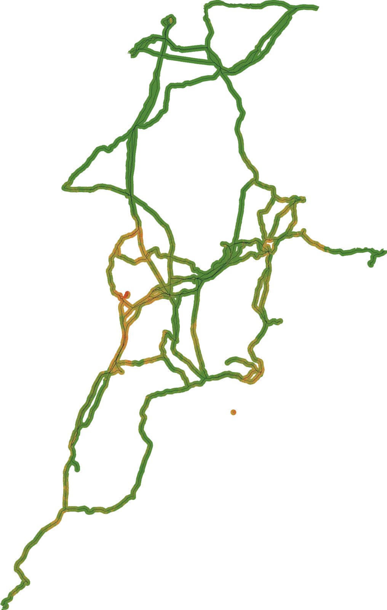
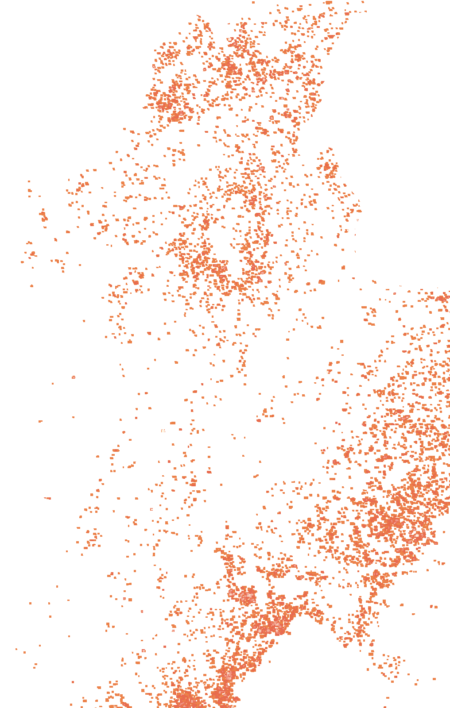

Grietas nuevas
En paredes, pisos o en el terreno, sobre todo si crecen.
01 · Personas Línea 4 · Comunidades y cuidado
Dibujamos a mano 10.265 deslizamientos y flujos alrededor de la red. Donde alguien miró con cuidado aparecieron seis veces más. Ningún algoritmo ve lo que nadie anotó.

La balanza La misma área, dos inventarios
Fotointerpretamos 3.045 km², el 4 % del corredor, sobre Google Earth Pro, PlanetScope y ortofotos. En esa misma área el inventario nacional tenía 1.573 eventos; mirando con cuidado encontramos 9.883. Cada punto representa 25 eventos.
La tierra no se movía más allí: alguien estaba mirando. Un mapa de deslizamientos también muestra dónde hubo gente mirando. Nuestro modelo conoce ese sesgo y lo compensa: pondera los ejemplos de terreno sin eventos según el esfuerzo de registro de cada zona.
Cálculo propio: 9.883 ÷ 1.573 = 6,3 veces. No quiere decir que esa zona tenga más deslizamientos que otras.
Fuera de esa área, el corredor depende sobre todo del inventario nacional: el SIMMA del Servicio Geológico Colombiano, Colombia en Mapas y el grupo Geohazards de la Universidad Nacional. El sensor que le falta al mapa está en la ladera.
El inventario 24.287 eventos
Nuestro inventario tiene 10.265 movimientos en masa: 9.491 deslizamientos, 767 flujos y 7 caídas. Todos con tipo asignado.
El inventario nacional dentro del corredor suma 14.478 eventos; al juntarlo con el nuestro y quitar los repetidos a menos de 50 m quedan 14.022. El combinado, con 24.287 eventos, es el que usó el modelo.
Antes y después Un deslizamiento de nuestro inventario
Un deslizamiento de 26 ha en Norte de Santander, visto por Sentinel-2. Arrastra la cortina, activa el parpadeo o usa la lupa. Conocemos la fecha de la imagen fotointerpretada (noviembre de 2021), no la del evento.


Antes · 2018–2021Después · 2021–2022NDVI Vegetación antes y después
El índice de vegetación cayó 0,20 dentro del polígono y solo 0,03 alrededor. La diferencia, 0,17, supera el umbral de 0,15 que usamos para separar la cicatriz de un cambio general del paisaje.
Sentinel-2 vuelve a mirar cada pocos días. Una ladera propensa que pierde su vegetación pierde las raíces que la sostienen: esa es una señal que se puede vigilar desde el espacio.
NDVI = (B08 − B04) / (B08 + B04) con medianas por periodo; medias de píxeles pareados (100 % de cobertura).
Mira Si vives en una ladera
Antes de moverse, muchas laderas avisan. Estas son las señales que recomiendan revisar las guías de gestión del riesgo.
En paredes, pisos o en el terreno, sobre todo si crecen.
Puertas y ventanas que antes cerraban bien y ya no.
Postes, árboles o cercas que se inclinan ladera abajo.
Agua que brota en la ladera, encharcamientos nuevos o tuberías rotas.
UNGRD, Lo que usted debe saber sobre deslizamientos (2021) · Corpoboyacá (2020).
Revisa tu casa y tu ladera después de lluvias largas. Las señales importan más cuando aparecen varias a la vez.
A la alcaldía de tu municipio, que dirige la gestión del riesgo. Si hay peligro inmediato, llama al 123. La Ley 1523 de 2012 dice que esta tarea es de las autoridades y de quienes viven en el territorio.
En Manizales, las Guardianas de la Ladera, hoy 80 mujeres cabeza de hogar, cuidan desde hace más de veinte años las obras que sostienen las laderas de la ciudad.
Ley 1523 de 2012, arts. 2, 14 y 27 · 123: número único nacional de emergencias, donde esté habilitado · Guardianas de la Ladera: Alcaldía de Manizales (2026), Radio Nacional (24-nov-2020), El Espectador (7-oct-2026).



Cuida La franja bajo las torres
Se estima que 95 de cada 100 incendios forestales tienen origen humano. El fuego deja la ladera sin la vegetación que la sostiene, y la siguiente temporada de lluvias la encuentra desnuda.
El mapa muestra los focos de calor de la temporada seca de enero a abril de 2024, al final del Niño anterior. Bajo cada línea hay una franja de servidumbre: para una línea de 500 kV de un circuito mide 60 m de ancho, y en ella no se construyen viviendas ni estructuras.
MinAmbiente (15-ago-2026) · RETIE, art. 3.19.1, tabla 3.19.1.a · MinAmbiente, Res. 532/2005 y Res. 1070 de 2026 (quemas abiertas controladas).
El video 1:53 · versión vertical
El sensor que le falta al mapa no está en el espacio: está en la ladera, en quien vive debajo y decide mirar.
En el video, los polígonos rojos son del inventario propio sobre relieve y cobertura reales. La casa y la quema que avanza son ilustraciones del mecanismo. Los clips rotulados «Recreación con IA» no muestran a personas ni lugares reales, tampoco a las Guardianas.
Música de los videos: «Divider», de Chris Zabriskie. Edición y mezcla para la trilogía bajo CC BY 4.0.